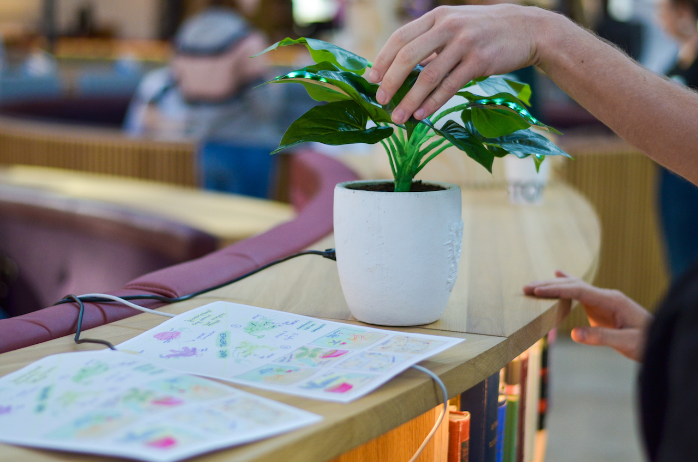
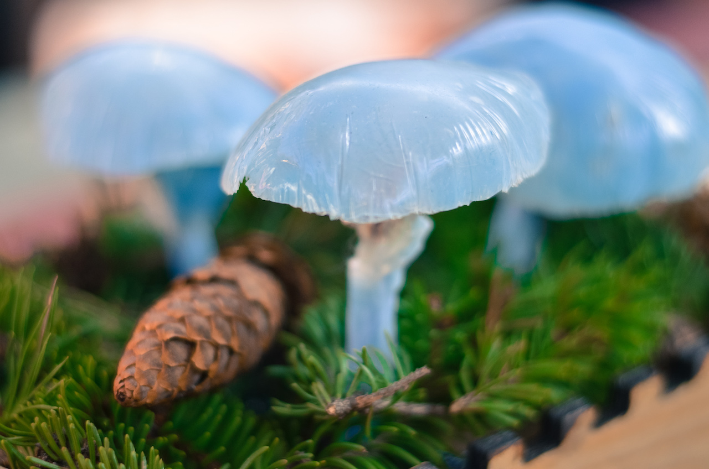
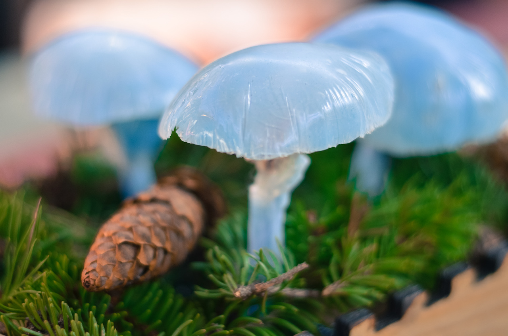
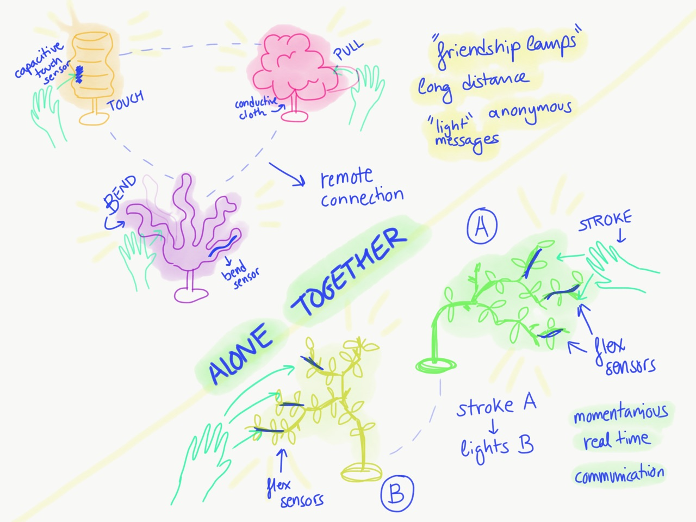
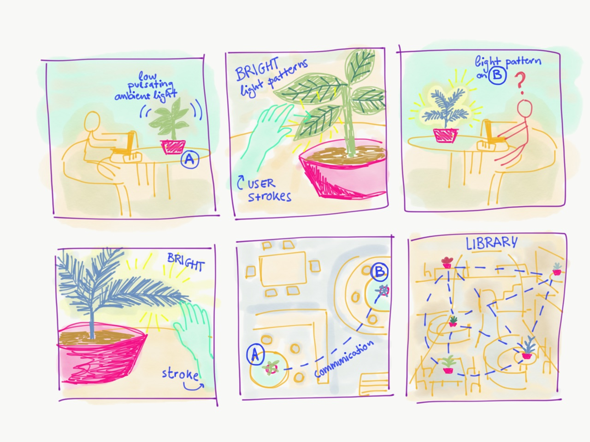

ALONE TOGETHER LAMPS
Interactive communicating plant lamps for KTH Library
Keywords: interaction design, friendship lamps

 

Alone Together lamps are two tangible artifacts designed for the course Physical Interaction Design and Realization, at KTH. The first lamp, called "Thorolf" can be touched, stroked and bent in order to generate light patterns on its leaves. The second plant, "Svamp" is a collection of three mushrooms that can be tapped lightly in order to illuminate each one. When one plant is touched, the other one receives a light signal, so you can send light messages back and forth.
The project was created by Alexandra Runhem, Ariel Blomqvist Rova, Gustav Mattsson and Nadia Campo Woytuk.
This project was conceived as part of a design course with the theme "designing for a library". We figured that one of the interesting aspects of the library at our university was that it was more of a place where people went to study than to read books. Further, people often went there alone but some sense of community was still present, a sense of being "alone together". Inspired by the concept of a simple friendship lamp, we created interactive plants which could be interacted with individually as well as being able to send a message to their counterpart on the other side of the room, or even from different countries, if an Internet connection is added to the communication.
A few initial concept sketches:
 A short Instructables with technical information on how the plants were made can be found here.
[March 15th, 2018] The project was featured on the Arduino Blog.